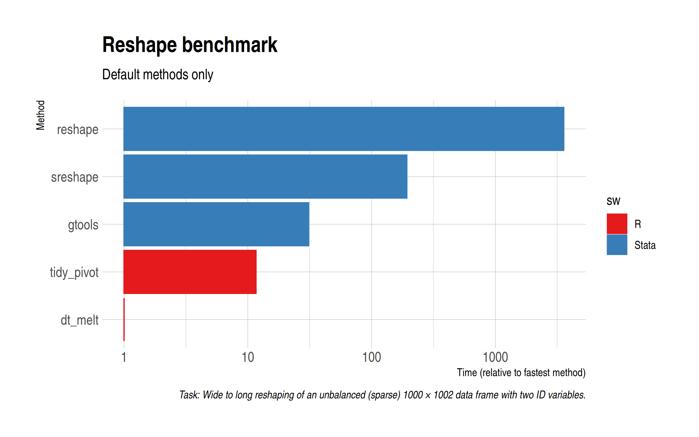

# Libraries ---------------------------------------------------------------
library(tidyverse)
library(data.table)
# Data prep ---------------------------------------------------------------
set.seed(10)
n = 1e6
n_col=1e3
d = matrix(sample(LETTERS, n, replace=TRUE), ncol=n_col)
## Randomly replace columns with NA values
for(i in 1:nrow(d)) {
j = sample(2:n_col, 1)
d[i, j:n_col] = NA_character_
}
rm(i, j)
## Ensure at least one row has obs for all columns
d[1, ] = sample(LETTERS, n_col, replace = TRUE)
## Get non-missing obs group (only really needed for the manual split-apply-combine approaches)
grp = apply(d, 1, function(x) sum(!is.na(x)))
## Convert to data frame and name columns
d = as.data.frame(d)
colnames(d) = paste0("x", seq_along(d))
d$grp = grp
d$id = row.names(d)
d = d %>% select(id, grp, everything())
# Export -----------------------------------------------------------------
fwrite(d, '~/sparse-wide.csv')Motivation
Over on Twitter, I was reply-tagged in a tweet thread by Ryan Hill. Ryan shows how he overcomes a problem that arises when reshaping a sparse (i.e. unbalanced) dataset in Stata. Namely, how can you cut down on the computation time that Stata wastes with all the missing values, especially when reshaping really wide data? Ryan’s clever solution is very much in the split-apply-combine mould. Manually split the data into like groups (i.e. sharing the same columns), drop any missing observations, and then reshape on those before recombining everything at the end. It turns out that this is a lot faster than Stata’s default reshape command… and there is even a package (sreshape) that implements this for you.
So far so good. But I was asked what the R equivalent of this approach would be. It’s pretty easy to implement — more on that in a moment — but I expressed scepticism that it would yield the same kind of benefits as the Stata case. There are various reasons for my scepticism, including the fact that R’s reshaping libraries are already highly optimised for this kind of thing and R generally does a better job of handling missing values.1
Sounds like we need a good reshape horserace up in here!
Insert obligatory joke about time spent reading reshape help files.
Benchmarks
Defaults
Similar to Ryan, our task will be to reshape wide data (1000 non-index columns) with a lot of missing observations. I’ll leave my scripts at the bottom of this post, but first a comparison of the “default” reshaping methods. For Stata, that includes the vanilla reshape command and the aforementioned sreshape command, as well as greshape from gtools. For R, we’ll use pivot_longer() from the tidyverse (i.e. tidyr) and melt() from data.table. Note the log scale and the fact that I’ve rebased everything relative to the fastest option.

Unsuprisingly, data.table::melt() is easily the fastest method. However, tidyr::pivot_longer() gives a very decent account of itself and is about three times as fast as gtools’ greshape. The base Stata reshape option is hopelessly slow for this task, demonstrating (among other things) the difficulty it has with missing values.
Manual implementation
Defaults out of the way, let’s implement the manual split-apply-combine approach in R. Again, I’ll leave my scripts at the bottom of the post for you to look at, but I’m essentially just following (variants of) the approach that Ryan adroitly lays out. Note that both tidyr::pivot_longer() and data.table::melt() provide options to drop missing values, so I’m going to try those out too.
As expected, the manual split-apply-combine approach(es) don’t yield any benefits in the R case. In fact, quite the opposite, with it resulting in a rather sizeable performance loss. (Yes, I know that I could try running things in parallel but I can already tell you that the extra overhead won’t be worth it for this particular example.)
Bottom line
For reshaping sparse data, you can’t really do much better than sticking with the defaults in R. data.table remains a speed marvel, although tidyr gives very good account of itself too. Stata users should definitely switch to gtools if they aren’t using it already.
Update: Follow-up post here with additional benchmarks, including other SW languages and a larger dataset.
Code
As promised, here is the code. Please let me know if you spot any errors.
First, generate the dataset (in R).
Next, run the Stata benchmarks.
clear
clear matrix
timer clear
set more off
import delimited "~/sparse-wide.csv"
// Vanilla Stata
preserve
timer on 1
reshape long x, i(id grp) j(variable)
timer off 1
restore
// sreshape
// net install dm0090
preserve
timer on 2
sreshape long x, i(id grp) j(variable) missing(drop all)
timer off 2
restore
// gtools
// ssc install gtools
preserve
timer on 3
greshape long x, by(id grp) key(variable)
timer off 3
restore
timer list
drop _all
gen result = .
set obs 3
timer list
forval j = 1/3{
replace result = r(t`j') if _n == `j'
}
outsheet using "~/sparse-reshape-stata.csv", replaceFinally, let’s run the R benchmarks and compare.
# Libraries ---------------------------------------------------------------
library(tidyverse)
library(data.table)
library(microbenchmark)
library(hrbrthemes)
theme_set(theme_ipsum())
# tidyverse ---------------------------------------------------------------
## Default
tidy_pivot = function() pivot_longer(d, -c(id, grp))
## Default with na.rm argument
tidy_pivot_narm = function() pivot_longer(d, -c(id, grp), values_drop_na = TRUE)
## Manual split-apply-combine approach
tidy_split = function() map_dfr(unique(d$grp), function(i) pivot_longer(filter(d, grp==i)[1:(i+2)], -c(id, grp)))
## Version of manual split-apply-combine approach that uses nesting
tidy_nest = function() {
d %>%
group_nest(grp) %>%
mutate(data = map2(data, grp, ~ select(.x, 1:(.y+1)))) %>%
mutate(data = map(data, ~ pivot_longer(.x, -id))) %>%
unnest(cols = data)
}
# data.table --------------------------------------------------------------
DT = as.data.table(d)
## Default
dt_melt = function() melt(DT, id.vars = c('id', 'grp'))
## Default with na.rm argument
dt_melt_narm = function() melt(DT, id.vars = c('id', 'grp'), na.rm = TRUE)
## Manual split-apply-combine approach
dt_split = function() rbindlist(lapply(unique(DT$grp), function(i) melt(DT[grp==i, 1:(i+2)], id.vars=c('id','grp'))))
# Benchmark ---------------------------------------------------------------
b = microbenchmark(tidy_pivot(), tidy_pivot_narm(), tidy_split(), tidy_nest(),
dt_melt(), dt_melt_narm(), dt_split(),
times = 5)
b
autoplot(b)
# Comparison with Stata results -------------------------------------------
stata = fread('~/sparse-reshape-stata.csv')
stata$method = c('reshape', 'sreshape', 'gtools')
stata$sw = 'Stata'
r = data.table(result = print(b, 's')$median, ## just take the median time
method = gsub('\\(\\)', '', print(b)$expr),
sw = 'R'
)
res = rbind(r, stata)
res[, rel_speed := result/min(result)]
capn = paste0('Task: Wide to long reshaping of an unbalanced (sparse) ', nrow(d),
' × ', ncol(d), ' data frame with two ID variables.')
## Defaults only
ggplot(res[method %chin% c('dt_melt', 'tidy_pivot', 'gtools', 'sreshape', 'reshape')],
aes(x = rel_speed, y = fct_reorder(method, rel_speed), col = sw, fill = sw)) +
geom_col() +
scale_x_log10() +
scale_color_brewer(palette = 'Set1') + scale_fill_brewer(palette = 'Set1') +
labs(x = 'Time (relative to fastest method)', y = 'Method', title = 'Reshape benchmark',
subtitle = 'Default methods only',
caption = capn)
## All
ggplot(res, aes(x = rel_speed, y = fct_reorder(method, rel_speed), col = sw, fill = sw)) +
geom_col() +
scale_x_log10() +
labs(x = 'Time (relative to fastest method)', y = 'Method', title = 'Reshape benchmark',
caption = capn) +
scale_color_brewer(palette = 'Set1') + scale_fill_brewer(palette = 'Set1') Footnotes
As good as Stata is at handling rectangular data, it’s somewhat notorious for how it handles missing observations. But that’s a subject for another day.↩︎